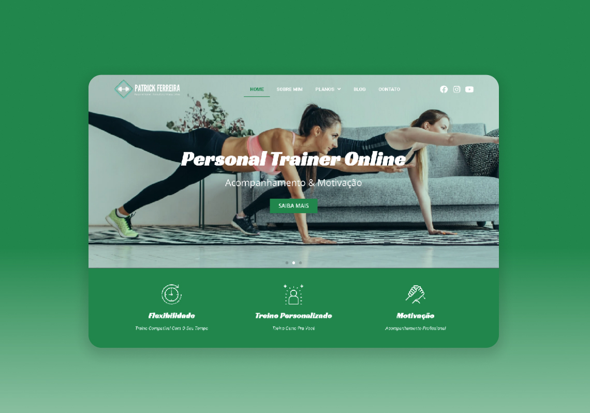
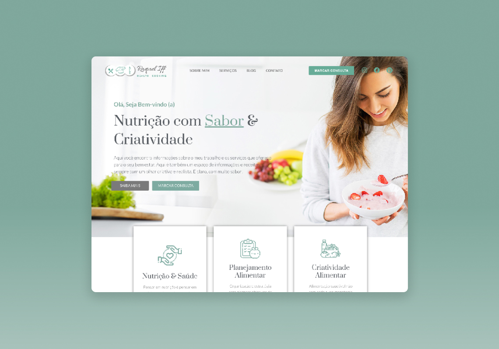
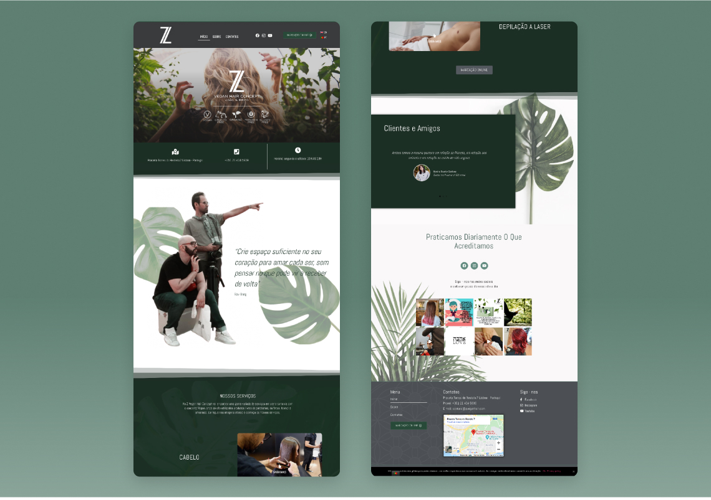

Tenho formação em Marketing Digital pela Universidade Europeia de Lisboa.
Sou carioca e estou baseada em Portugal, e atualmente trabalho com criação de site Wordpress com Elementor.
Aqui você poderá conhecer minhas principais habilidades.
Abaixo alguns sites que desenvolvi:
Site Patrick Ferreira - Para acessar clique AQUI
Site Raquel Iff - Para acessar clique AQUI
Site Z Vegan Hair By João e Brito - Para acessar clique AQUI
Estou sempre trabalhando para aprimorar e aprender novas habilidades. Gostaria de destacar algumas:
Design
Marketing
Desenvolvimento Web
Acesse meu blog para conhecer meus textos sobre Marketing Digital